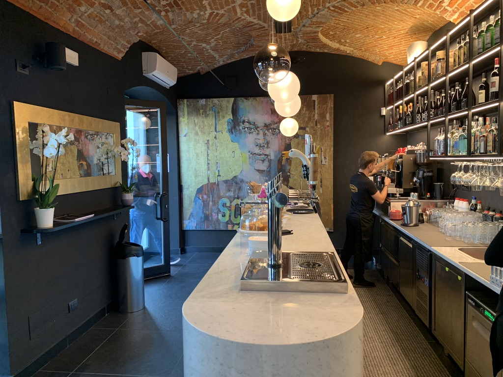
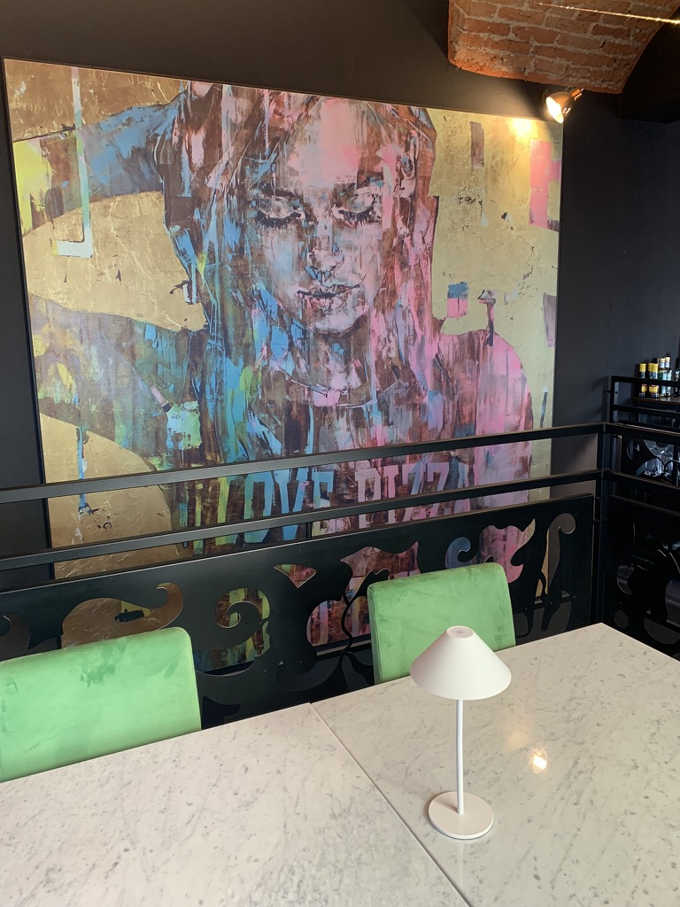
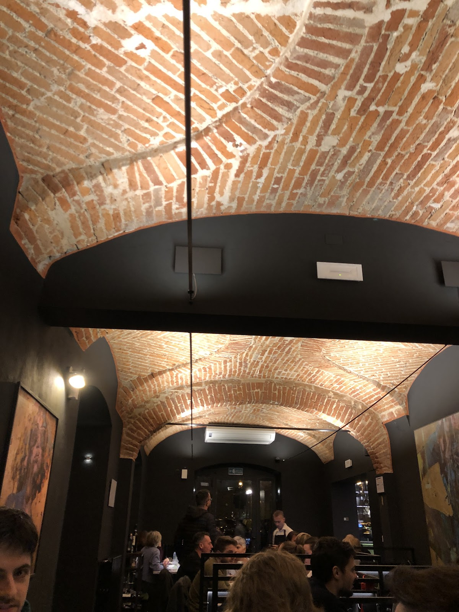
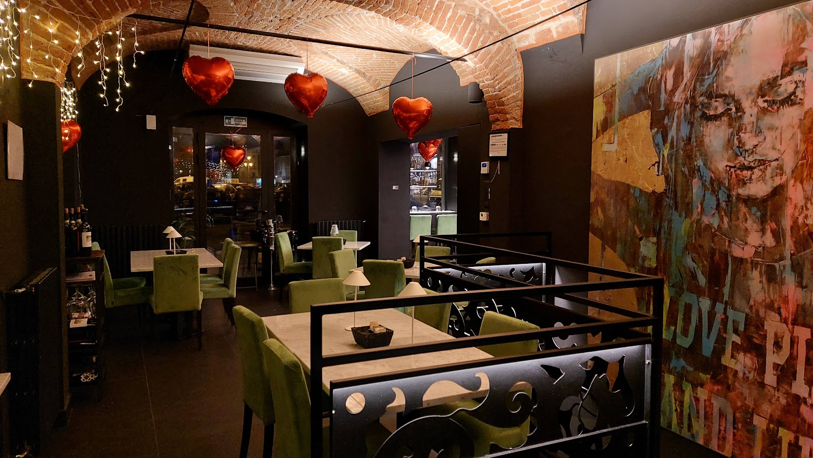
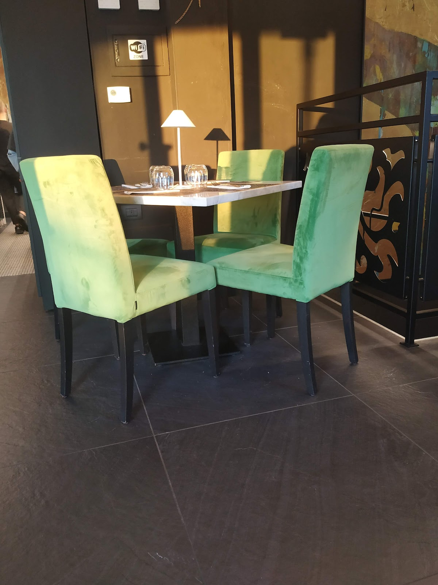
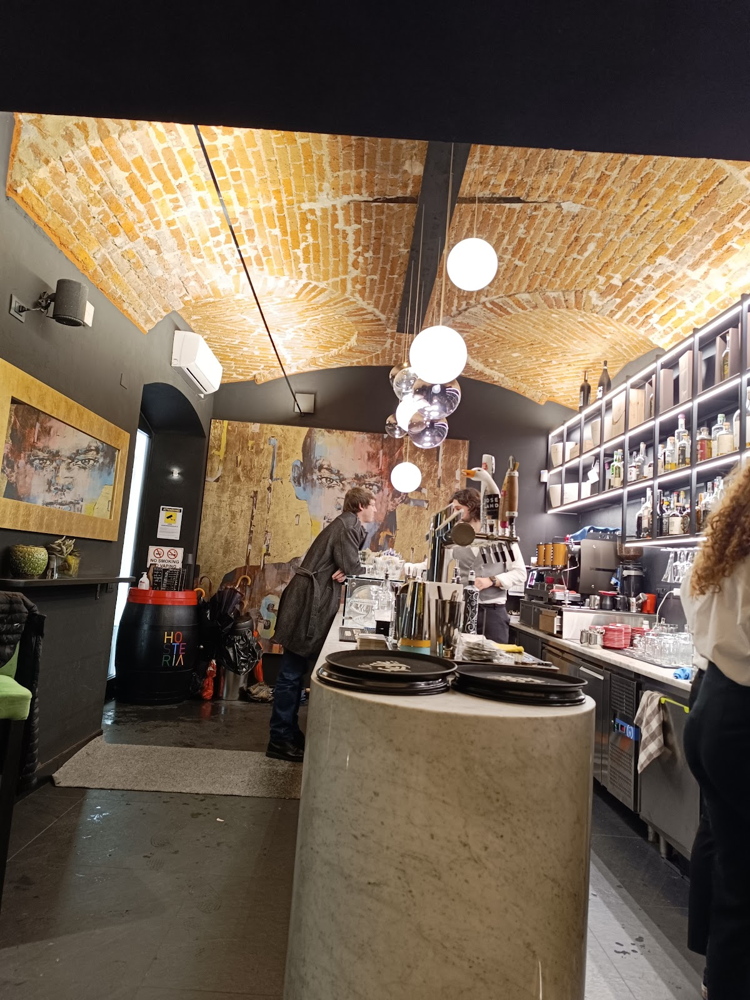
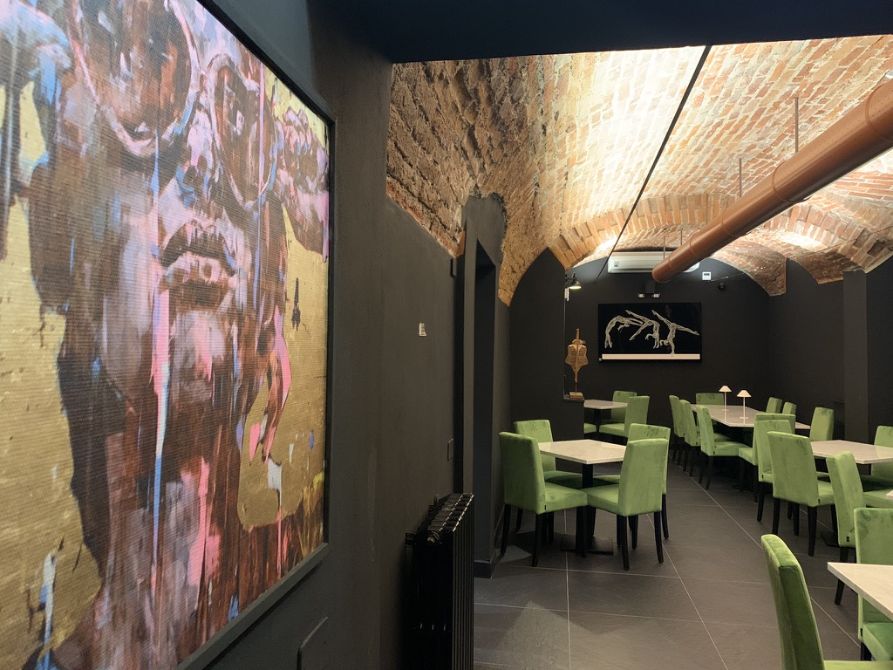
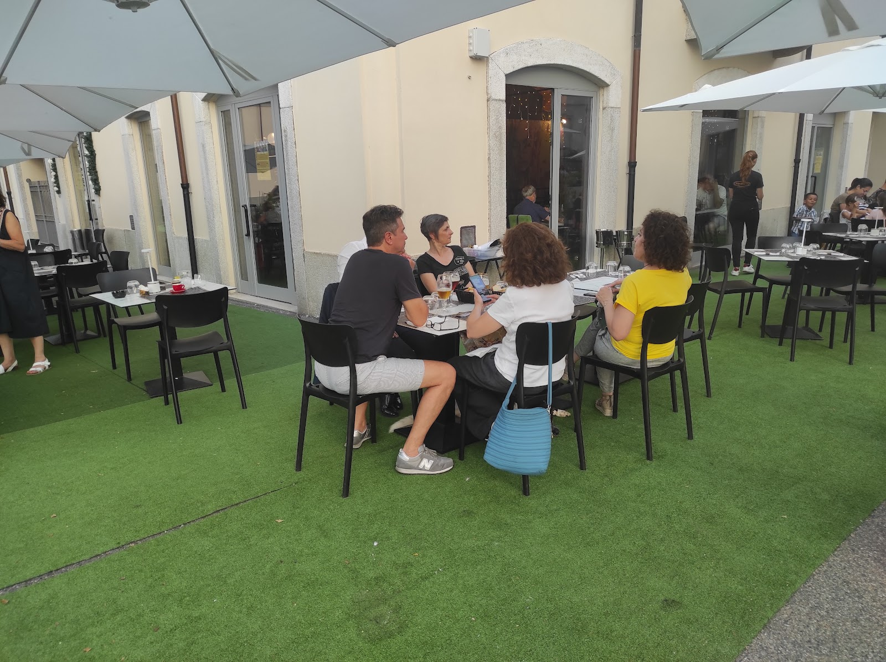
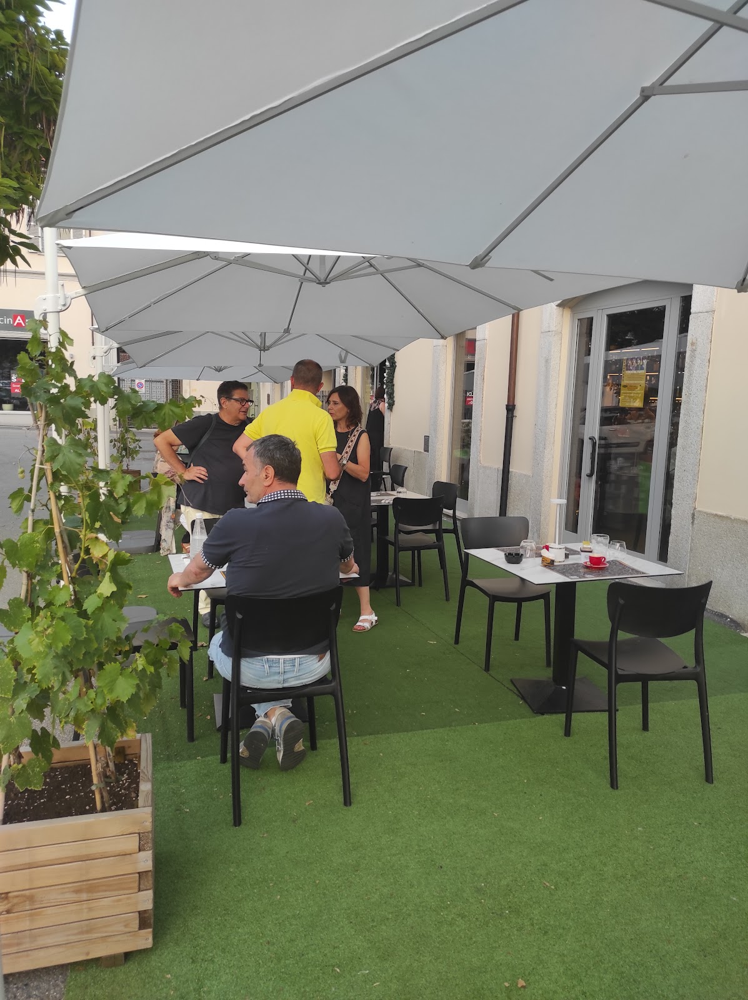
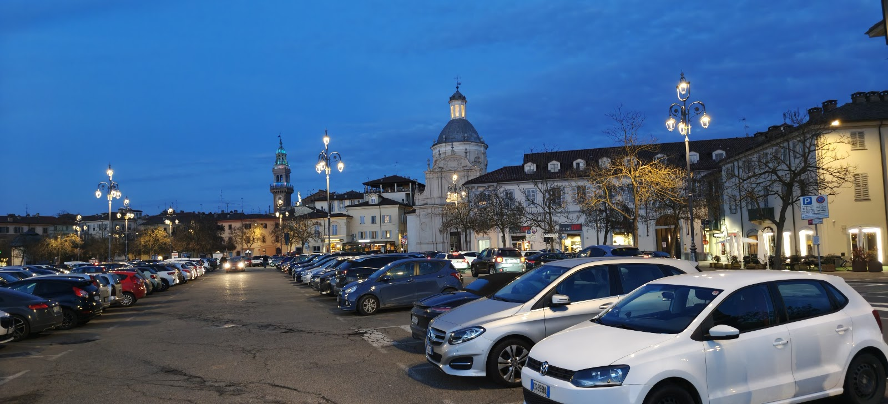

1
dalle 7:00
Colazione
Caffetteria e brioche appena sfornate, con la piazza che si sveglia davanti al dehors.
Domenica dalle 7:30

Piazza Castello · Casale Monferrato
Bistrò, pizzeria Zero Lievito e cocktail bar sulla piazza principale di Casale. Dalla colazione delle sette al dopocena del sabato.
…c’è qualcosa di fantastico nel sedere attorno ad un tavolo, guardandosi negli occhi mentre si degusta del buon cibo o si sorseggia un ottimo bicchiere di vino…
Il locale
Quel fantastico è entrato a pieno titolo nella nostra missione. Ottime materie prime per i piatti, ottimi drink al banco, etichette scelte tra le cantine del territorio. E la voglia di non fermarci mai a cercare qualcosa di meglio.
L’ambiente che abbiamo costruito è inusuale per Casale: un occhio a metà fra l’antico e il moderno, nel palazzo che guarda il Castello.
Lasciatevi guidare dalla sala e dalla cucina di Chef Mauro, per saziare gusto e anima.
La nostra giornata

Fassona piemontese, agnolotti della tradizione, pasta fresca e pane fatto in casa. La carta cambia con la stagione.
Cocktail classici miscelati con cura, birre alla spina artigianali e vini al calice da Barbera, Grignolino e Ruchè.
Interni di design dentro un palazzo storico, e il dehors sulla piazza con le luci della sera.
Dalla colazione al dopocena
dalle 7:00
Caffetteria e brioche appena sfornate, con la piazza che si sveglia davanti al dehors.
Domenica dalle 7:30
dalle 11:50
Panini gourmet con pane fatto in casa, insalatone light e i primi della tradizione per chi ha più tempo.
Cucina aperta fino alle 14:30
dalle 18:30
Spritz, Negroni o un gin tonic a scelta, con il Piatto Aperitivo Casamatta entro le 19:45.
Cocktail € 7
dalle 19:00
La carta di Chef Mauro e le pizze Zero Lievito con i nomi dei paesi del Monferrato.
Prenotazione consigliata
fino alle 2:00
Grappe stravecchie del Monferrato, amari e un ultimo cocktail. Il venerdì fino all’una, il sabato fino alle due.
Venerdì e sabato
Ricetta depositata
Il nostro impasto non contiene lievito. Nasce da una lunga ricerca con un consulente in biotecnologie, che ha trovato l’equilibrio fra farine selezionate, tempi e temperature.
Il risultato è una pizza fragrante, sottile e altamente digeribile. Ogni disco viene steso a mano, uno alla volta, con molti passaggi al mattarello.
Le pizze portano i nomi dei paesi del Monferrato.
Niente lieviti nell’impasto: solo farine, acqua e metodo.
Un disco per volta, col mattarello. Più lavoro, più fragranza.
Da Conzano a Serralunga di Crea, una pizza per ogni campanile.
Bar e cantina
Distillati scelti e miscelazione classica. Tutti i cocktail a sette euro, il gin tonic con la selezione di gin che preferite.
Cantina Contarini. Glicine e fiori d’acacia.
Calice € 5Hic et Nunc, metodo Martinotti, 9 mesi sulle fecce.
Calice € 6Barbera, Grignolino, Ruchè e le etichette scelte del territorio.
Calice da € 5Barolo 9 anni, Nebbiolo 16 anni, Riserva 20 anni.
da € 4,50Galleria
Casale e il Monferrato sono dentro la carta: nei nomi delle pizze, nelle cantine, nei dolci con i krumiri.







Voucher regalo
Un menu degustazione per due, da scegliere fra aperitivo, pranzo o cena. Arriva in una confezione regalo elegante; basta chiedere in sala.
Cocktail à la carte e Piatto Aperitivo a testa, acqua e caffè.
Valido per due persone
Un percorso dalla carta di Chef Mauro, con un calice del Monferrato.
Il più richiesto
Antipasto, primo o pizza, secondo, dolce e vino in abbinamento.
Valido per due persone
Dicono di noi
Locale molto ben curato, molto pulito e con personale veramente di un livello altissimo.
Ottima pizza di grande diametro con impasto sottile, senza lievito, a tratti croccante.
Perfetto a tutto tondo, dalla colazione alla cena e oltre.
L’ambiente è accogliente e c’è un clima di relax. Bell’idea dei nomi pizza dei paesini della zona!
Contatti e prenotazioni
Sulla piazza principale, con il dehors e il parcheggio davanti. Wi-Fi gratuito, anche da asporto.
| Lunedì | 7:00 – 14:30 18:30 – 24:00 |
|---|---|
| Martedì – Giovedì | 7:00 – 14:30 18:30 – 24:00 |
| Venerdì | 7:00 – 14:30 18:30 – 01:00 |
| Sabato | 7:00 – 14:30 18:30 – 02:00 |
| Domenica | 7:30 – 15:00 18:30 – 24:00 |
Pranzo dalle 11:50, cena dalle 19:00.
+39 351 538 6154, Casamatta bistrò e design.
Giorno, ora, numero di persone, nome, eventuali allergie e note.
Il tavolo è prenotato quando rispondiamo.